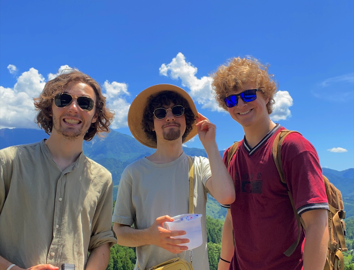

Ohayo!
Mijn naam is Eliam. In de zomer van 2023 ben ik met mijn vrienden naar Japan gereisd. Na maanden lang sparen en plannen zijn wij op deze onvergetelijke vakantie geweest. Hier heb ik natuurlijk enorm veel foto’s gemaakt en veel ervaringen opgedaan. Ik koester deze herinneringen en wil ze graag delen met anderen. Daarom heb ik besloten deze website te creëren. Op deze site vind je een verzameling van mijn reisfoto's, verhalen en ervaringen in Japan. Ik nodig je uit om de galerij en de interactieve kaart te verkennen, waar je de foto's en hun bijbehorende verhalen kunt vinden. Daarnaast deel ik ook handige tips voor degenen die zelf overwegen naar Japan te reizen.